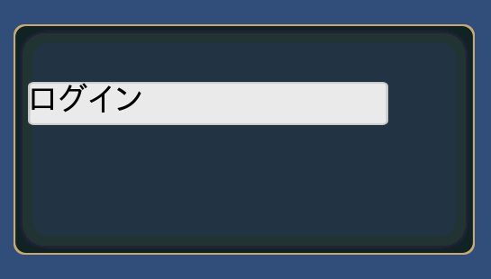

LABEL¶
C#: CWinCtrlLabel
ラベルを表示するためのコントロールです。 BAR と違い、onClickイベントを受け取れません。
LABEL(コントロール名) {
プロパティ1;
プロパティ2;
:
:
プロパティn;
};
記述例¶
WINDOW(255_000_00001) {
STYLE = WINDOW_STYLE_NOTITLEBAR|WINDOW_STYLE_ANCHOR_CENTER;
POSITION = 0,-100;
SIZE = 512,256;
};
$w = 400;
LABEL(TEST) {
ID = 001_000_00020;
CAPTION = 001_000_00030;
CAPTION_COLOR = 0,0,0,1;
STYLE = ANCHOR_LEFTTOP;
POSITION = 16,-64;
SIZE = $w,48;
};

プロパティ¶
代表的なデフォルト値¶
TEX_ID = "LABEL";
STYLE = TEXT_CENTER;
COLOR = 1,1,1,1;
CAPTION_COLOR = 1,1,1,1;
TEX_ID = テクスチャID,パーツID¶
TEX_ID = パーツID¶
テクスチャIDとパーツIDを指定します。
SIZE = 横サイズ,縦サイズ¶
表示サイズを変更します。 省略したとき、若しくは、0を指定すると、テクスチャパーツからサイズを取得してきます。
SIZE = 64,32; //64x32
SIZE = ,32; //Set the width of the texture part width
SIZE = 64; //Set the height of the texture part height
COLOR = R,G,B,A¶
カラーを指定します。
R,G,Bについては、0～2の間で指定してください。
1を超えたとき、そのカラー成分を2倍まで上げて表示することができます。
Aについては、0～1の間で指定してください。
CAPTION_COLOR = R,G,B,A¶
キャプションのカラーを指定できます。
0～1の間で指定してください。
CAPTION_OFFSET = Ｘ,Ｙ¶
キャプションの位置を移動することができます。
STYLE = フラグ0|フラグ1|..|フラグn¶
コントロールの表示アンカーを指定できます。
| 表示位置アンカーフラグ | 説明 |
|---|---|
| ANCHOR_DEFAULT | アンカー位置を左上に設定
ANCHOR_LEFTTOPと同じ
コントロールの中心位置はデフォルトで、BASE_LEFTTOPになる。
|
| ANCHOR_LEFTTOP | アンカー位置を左上に設定
コントロールの中心位置はデフォルトで、BASE_LEFTTOPになる。
|
| ANCHOR_LEFT | アンカー位置を左に設定
縦にはセンタリング
コントロールの中心位置はデフォルトで、BASE_LEFTになる。
|
| ANCHOR_LEFTBOTTOM | アンカー位置を左に設定
縦には下辺を基準に配置
コントロールの中心位置はデフォルトで、BASE_LEFTBOTTOMになる。
|
| ANCHOR_TOP | アンカー位置を上辺に設定
横方向にはセンタリング
コントロールの中心位置はデフォルトで、BASE_TOPになる。
|
| ANCHOR_CENTER | アンカー位置を画面中央にセンタリング
コントロールの中心位置はデフォルトで、BASE_CENTERになる。
|
| ANCHOR_BOTTOM | アンカー位置を底辺に設定
横方向にはセンタリング
コントロールの中心位置はデフォルトで、BASE_BOTTOMになる。
|
| ANCHOR_RIGHTTOP | アンカー位置を右上に設定
コントロールの中心位置はデフォルトで、BASE_RIGHTBOTTOMになる。
|
| ANCHOR_RIGHT | アンカー位置を右に設定
縦にはセンタリング
コントロールの中心位置はデフォルトで、BASE_RIGHTになる。
|
| ANCHOR_RIGHTBOTTOM | アンカー位置を右に設定
縦には下辺を基準に配置
コントロールの中心位置はデフォルトで、BASE_RIGHTBOTTOMになる。
|
コントロールの中心位置を指定できます。
| 中心位置変更フラグ | 説明 |
|---|---|
| BASE_DEFAULT | アンカーフラグに応じて変わる。
特に指定しなければ、これになります。
各アンカーフラグの説明を参照
|
| BASE_LEFTTOP | 中心位置をコントロールの左上に設定 |
| BASE_LEFT | 中心位置を左に設定
縦にはコントロールの真中
|
| BASE_LEFTBOTTOM | 中心位置を左下に設定 |
| BASE_TOP | 中心位置を上辺に設定
横にはコントロールの中心
|
| BASE_CENTER | 中心位置をコントロールの中心 |
| BASE_BOTTOM | 中心位置を底辺に設定
横方向にはコントロールの真中
|
| BASE_RIGHTTOP | 中心位置をコントロールの右上に設定 |
| BASE_RIGHT | 中心位置を右に設定
横にはコントロールの中心
|
| BASE_RIGHTBOTTOM | 中心位置を右下に設定
|
キャプションの中心位置を指定できます。
| テキストアンカー | 説明 |
|---|---|
| TEXT_CENTER | テキスト表示を中心に合わせます。 |
| TEXT_LEFT | テキスト表示を左に合わせます。 |
| TEXT_RIGHT | テキスト表示を右に合わせます。 |
キャプションのフォント装飾を変更できます。
| キャプション装飾種類 | 説明 |
|---|---|
| TEXT_NORMAL | 装飾なし |
| TEXT_BOLD | 太字 |
| TEXT_DENT | へこんだ感じの文字 |
| TEXT_SHADOW | 影付き文字 |
機能を制限するスタイルは以下のものがあります。
| 機能制限スタイル | 説明 |
|---|---|
| HIDE | 表示を隠す。 |
| DRAG | ドラッグ可能にする。 |
| DISABLE | 押せなくし、暗くする。 |
| NOHIT | 押せなくする。 |